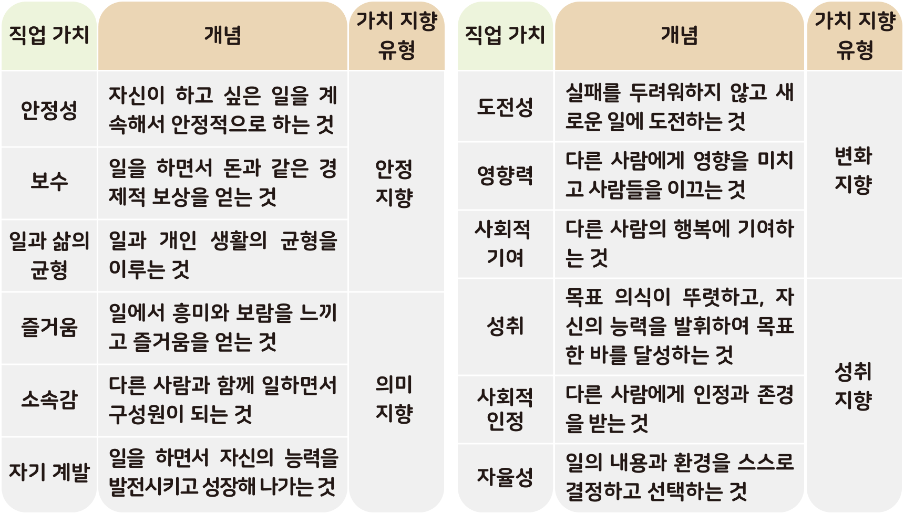

활동하기 직업 가치관 검사를 통해 나의 직업 찾아보기
● 다음 주소에 접속하여 직업 가치관 검사를 해 보고, 검사 결과를 바탕으로 물음에 답해 보자.
직업 가치관 검사는 내가 직업을 선택할 때 어떤 가치를 중요하게 여기는지 확인할 수 있는 검사이다. 직업 가치는 나의 직업 선택에 중요한 기준이 되며, 자신의 직업 가치와 일 치하는 직업을 가졌을 때 더 큰 만족감과 성취감을 느낄 수 있다. 다음은 직업 생활에 필요한 가치 중 열두 가지 가치를 네 가지 가치 지향 유형으로 분류한 표이다.
- 커리어넷 누리집
● 다음 주소에 접속하여 직업 가치관 검사를 해 보고, 검사 결과를 바탕으로 물음에 답해 보자.

1 검사 결과를 보고, 자신이 중요하게 생각하는 직업 가치를 순위대로 써 보자.
| 1위 | 2위 | 3위 |
|---|---|---|
|
사회적 안정 |
영향력 |
도전성 |
2 검사 결과를 보고, 자신의 가치 지향 유형에 대한 내용을 써 보자.
|
유형 |
|
|---|---|
|
주요 가치 |
|
|
내용 |
변화 지향형은 안정적인 생활보다는 자신의 일을 통해서 변 화를 추구하고자 하는 유형이다. 이 유형의 학생들은 직업을 통해서 끊임없이 새로운 일에 도전하고자 할 수 있으며, 자신의 일을 통해 자신뿐만 아니라 다른 사람에게도 영향을 끼침으로써 환경적 변화를 만들고자 한다. |
3 자신이 잘하는 것과 좋아하는 것, 그리고 직업 가치 요인을 고려하여 자신이 희망하는 직업을 찾아 써 보자. 그리고 그 까닭을 이야기해 보자.
| 적성 | 흥미 | 직업 가치관 검사 추천 직업 |
희망 직업 |
|---|---|---|---|
|
음악 능력, |
과학기술, |
감독 및 연출자, 광고 및 |
광고 기획자 |